En esta pagina pondre algunos codigos que me sirvieron para pushear y crear repositorios en VScode
Primero hice un archivo en github en el que puse algunos archivos
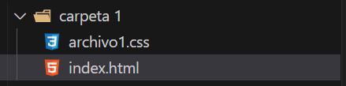Despues en la terminal de mi VScode ingrese el codigo: git init para que se le comience a tomar en cuenta
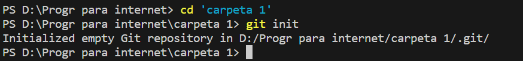Nos damos cuenta de que funciono al ver que los archivos tienen al lado una U, por lo cual se toman en cuenta para subir o editarse
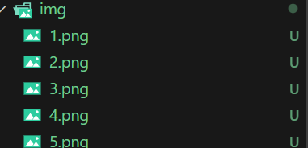Con eso configurado podemos ir a github para hacer un nuevo repositorio que podemos configurar a gusto
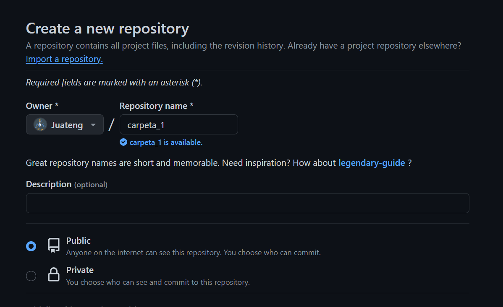Despues de crear el repositorio github nos ofrece comandos para comenzar a configurar la carpeta, como son el remote add origin y el branch
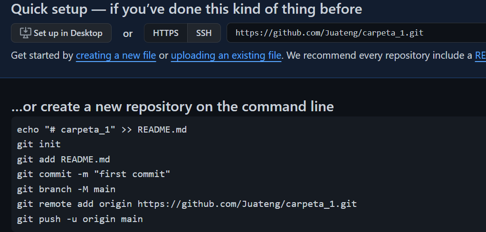 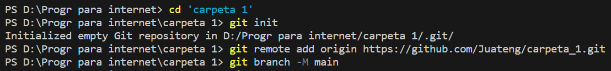Ahora si podemos comenzar a añadir archivos con el comando git add . para subir cada archivo nuevo y el git commit -m "texto" para poder continuar con el proceso de subida
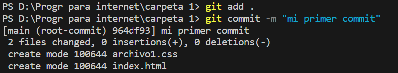Podemos notar que los archivos cambian su U por una A
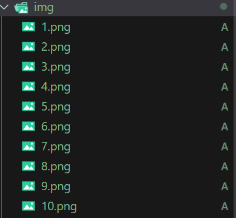Finalmente el git push logra que los archivos que pasaron por el add y el commit se suban al github
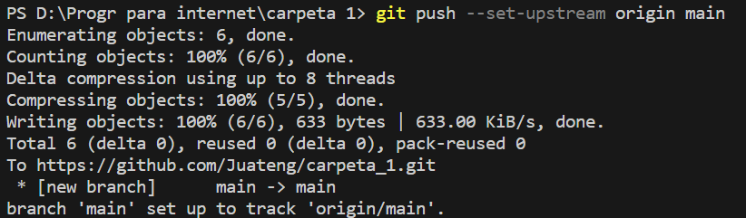Como comprobacion podemos ver en nuestro repositorio los archivos que se subieron
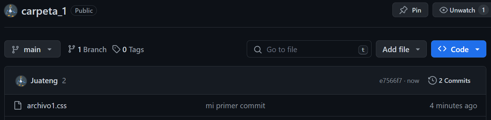Como dato extra, al modificar los archivos de forma local podemos notar que saldra una M al lado de los archivos esta M viene de "modified" por lo cual no se reflejara en github hasta que le hagamos add, commit y push
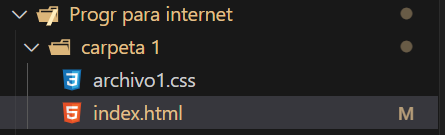